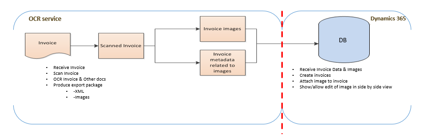
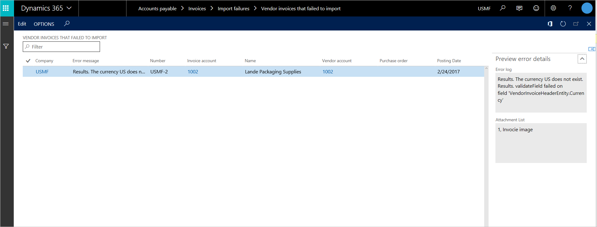
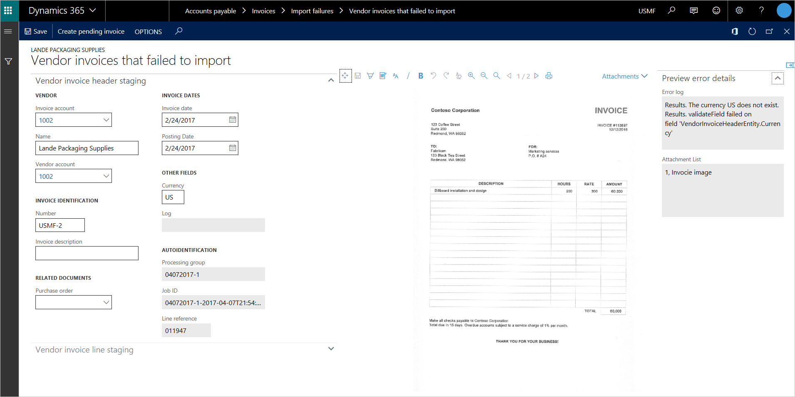
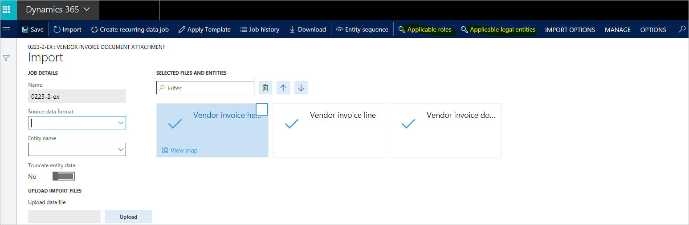

Rechnungsautomatisierung für gescannte Dokumente
Important
Dynamics 365 for Finance and Operations hat sich zu speziell entwickelten Anwendungen entwickelt, mit denen Sie bestimmte Geschäftsfunktionen verwalten können. Weitere Informationen zu diesen Änderungen finden Sie im Dynamics 365-Lizenzierungshandbuch.
In diesem Thema werden die Funktionen, die für die weitere Automatisierung von Kreditorenrechnungen verfügbar sind, selbst Rechnungen mit Anlagen, erklärt.
Organisationen, die ihre Kreditorenkontenprozesse (AP) optimieren möchten, identifizieren häufig den Fakturierungsprozess als einen ersten Prozessbereich, der effizienter sein sollte. In vielen Fällen lagern diese Organisationen die Verarbeitung von Papierrechnungen an einem Dienstanbieter für die optische Zeichenerkennung aus. Sie erhalten maschinenlesbare Rechnungsmetadaten zusammen mit einem Bild jeder gescannten Rechnung. Um bei der Automatisierung zu unterstützen, wird eine Lösung erstellt, um den Verbrauch dieser Artefakte im Fakturierungssystem zu aktivieren. Dieser Automatisierungsstandard ist jetzt aktiviert, um eine Rechnungsautomatisierungslösung zu erhalten.
Lösungskontext
Die Rechnungsautomatisierungslösung ermöglicht eine Standardschnittstelle, die Rechnungsmetadaten für den Rechnungskopf und Rechnungspositionen akzeptieren kann, und auch Anhänge, die der Rechnung zugeordnet sind. Jedes System, das externe Artefakte generieren kann, die mit dieser Schnittstelle entsprechen, ist, in den Feed für die automatischen Verarbeitung von Rechnungen sowie Anhängen zu senden.
Die folgende Abbildung zeigt ein Beispielintegrationsszenario, wobei Contoso mit einem OCR-Dienstanbieter für die Kreditorenrechnungsverarbeitung zusammengearbeitet hat. Der Contoso-Kreditoren sendet die Rechnung dem Rechnungen Dienstanbieter per E-Mail. Durch verarbeitendes OCR, generiert der Dienstanbieter Rechnungsmetadaten (Kopfdaten und Positionen und/oder) ein gescanntes Bild der Rechnung. Eine Integrationsebene verarbeitet diese Artefakte, sodass diese weiterverarbeitet werden können.

Einige Abweichungen des vorhergehenden Szenarios sind möglich, wenn Rechnungsintegration erforderlich ist. Datenmigration ist ein anderer Anwendungsfall, bei dem diese Schnittstelle verwendet werden kann, um Rechnungen und Anhänge zu erstellen.
Lösungskomponenten
Der Lösungsbedarf besteht aus den folgenden Komponenten:
- Datenentitäten für den Rechnungskopf, die Rechnungspositionen und die Rechnungsanhänge
- Ausnahme, die für Rechnungen verarbeitet wird
- Ein Anhangviewer parallel zu den Rechnungen
Die im weiteren Verlauf dieses Themas enthaltenen detaillierten Beschreibungen dieser Lösungskomponenten.
Datenentitäten
Ein Datenpaket ist die Arbeitseinheit, die gesandt werden muss, damit anschließend Rechnungskopf, Rechnungsanhänge und Rechnungspositionen erstellt werden können. Die folgenden Datenentitäten werden für Artefakte verwendet werden, die sich aus dem Datenpaket zusammensetzen:
- Kreditorenrechnungskopf
- Kreditorenrechnungsposition
- Dokumentanhang von Kreditorenrechnung
Kreditorenrechnungsdokumentanhang ist eine Entität der neuen Daten, die im Rahmen dieser Funktion eingegeben wird. Die Kreditorenrechnungskopfentität wurde geändert, sodass diese Anlagen unterstützt werden. Die Kreditorenrechnungspositionsentität ist für diese Funktion nicht geändert.
Ausführliche Informationen zu Datenpaketen finden Sie unter Datenverwaltungsübersicht (This is an external link). Informationen zum Erstellen von Datenpaketen mithilfe des Datenverwaltungsarbeitsbereichs finden Sie unter Datenpakete in der Dynamics 365 Finance and Operations-Apps-Lösung verarbeiten und verbrauchen (This is an external link).
Um schnell Testdaten zu generieren, die Rechnungen und Anhänge enthalten, führen Sie die folgenden Schritte aus.
Anmelden bei Ihrer Instanz.
Wechseln Sie zu Kreditoren > Rechnungen > Offene Kreditorenrechnungen.
Erstellen von Rechnungen, die Positionen und Anhänge haben.
Note
Die Anlagen müssen Kopfanhänge sein. Momentan unterstützt die Kreditorenrechnungsdokument-Anhangentität nicht die Positionsanhänge.
Öffnen Sie den Arbeitsbereich Datenverwaltung.
Erstellen eines Export-Einzelvorgangs, der den Kreditorenrechnungskopf, die Kreditorenrechnung und die Kreditorenrechnungsposition-Dokumentanhang-Entitäten enthält.
Exportieren der Daten.
Laden Sie die exportierten Daten als Paket herunter. Sie können nun das Paket verwenden, um Daten in Zielinstanzen für Testzwecke zu importieren.
Bestimmen der juristischen Person für die Rechnung
Rechnungen, die über Datenenpakete importiert werden, können der juristischen Person zugeordnet werden, so dass sie in zwei Möglichkeiten gehören:
- Der Importeinzelvorgang, der die Rechnung, bearbeitet importiert sie in das gleiche Unternehmen, in dem der Einzelvorgang in Datenverwaltung geplant wurde. Das bedeutet, dass das Unternehmen des Einzelvorgangs das Unternehmen bestimmt, zu dem die Rechnung gehört.
- Wenn das Datenpaket, das Rechnungen enthält, an Finance gesandt wird, kann der Aufrufende (das heißt, die Integrationsbewerbung, die außerhalb von Finance ausgeführt wird), die Unternehmenskennung im Formular HTTP-Anforderung explizit erwähnen. In diesem Fall werden der Unternehmenskontext, in dem der verarbeitende Einzelvorgang in Finance läuft, überschrieben und die Rechnungen werden in die Unternehmen importiert, die über HTTP-Anforderung übergeben wurde.
Note
Dieses Verhalten ist Standarddatenverwaltungsverhalten. Es ist hier beschrieben, im Kontext der Rechnungen, einfach aufgrund der Vollständigkeit.
Ausnahme verarbeiten
In Szenarios, in dem Kreditorenrechnungen über Integration in Finance and Operations kommen, muss es einen einfachen Weg für das Kreditorteammitglied geben, Ausnahmen oder fehlgeschlagene Rechnungen zu verarbeiten, und hängige Rechnungen zu verarbeiten und hängige Rechnungen der fehlgeschlagenen Rechnunge zu erstellen. Diese Ausnahme, die für Kreditorenrechnungen verarbeitet wird, ist nun Teil von Finance and Operations.
Seite Ausnahmeliste
Die Listenseite für neue Rechnungsausnahmen ist unter Kreditoren > Rechnungen > Importfehler > Kreditorenrechnungen, die nicht importiert werden können verfügbar. Diese Seite enthält alle Kreditorenrechnungsheaderdatensätze von der Stagingtabelle der Kreditorenrechnungskopfdatenentität angezeigt. Beachten Sie, dass Sie die gleichen Datensätze vom Datenverwaltung Arbeitsbereich angezeigt werden können, in dem Sie die gleichen Aktivitäten auch ausgeführt werden können, die in der Ausnahmebehandlungsfunktion bereitgestellt werden. Allerdings wird die Benutzeroberfläche, die die Ausnahmebehandlungsfunktion bereitstellt, für einen funktionalen Benutzer optimiert.

Diese Listenseite enthält die folgenden Felder, die über Feed: eintreffen:
Unternehmen – Das Unternehmen, von dem die Rechnung generiert wird.
Fehlermeldung – Die Fehlermeldung, die das Datenverwaltungsframework ausgibt, um zu erläutern, warum die Rechnung nicht erstellt werden kann
Nummer – Die Rechnungsnummer
Rechnungskonto
Name –Der Name des Kreditors
Kreditorenkonto
Bestellungserfassung – Die Nummer der Bestellungserfassung für die aktuelle Rechnung
Buchungsdatum
Rechnungsdatum
Rechnungsbeschreibung
Währung
Protokoll
Positionsreferenz – Die Kennung, die vom externen System stammt
Note
Die Positionsreferenz ist nicht Rechnungskennung
Diese Listenseite besitzt ebenfalls ein Vorschaufenster, das Sie wie folgt verwendet werden können:
- Hier werden alle geladenen Fehlermeldung angezeigt, um die Spalte Fehlermeldung im Raster nicht erweitern zu müssen.
- Hier wird die gesamte Liste der Anlagen für die Rechnung an, sofern vorhanden kamen Anlagen mit der Rechnung.
Die Listenseite unterstützt die folgenden Aktivitäten:
- Bearbeiten – Öffnet den Ausnahmedatensatz im Bearbeitungsmodus, damit die Probleme behoben werden können.
- Optionen – Sie greifen auf die Standardoptionen zu, die auf Listenseiten verfügbar sind. Sie können die Option Zum Arbeitsbereich hinzufügen auf die Ausnahmelistenseite in Ihrem Arbeitsbereich als Liste oder Kachel hinzufügen.
Ausnahmedetail-Seite
Wenn Sie den Bearbeitungsmodus starten, wird die Ausnahmedetailseite für die Rechnung mit Problemen angezeigt. Wenn es Anlagen gibt, werden die Rechnung und der Standardanhang nebeneinander in der Rechnung auf der Seite mit den Ausnahmedetails angezeigt

In der vorherigen Abbildung hat keine Positionen für den Kreditorenrechnungskopf, der hereinkam. Daher ist dieser Bereich leer.
Die Ausnahmedetailseite unterstützt den folgenden Arbeitsgang:
- Pendente Rechnung erstellen – Wenn Sie das Problem auf der Rechnung als Teil der Ausnahme Verarbeitungseinstellungen korrigiert haben, können Sie darauf klicken, um ausstehende Rechnungen zu erstellen. Die Erstellung der ausstehenden Rechnungen erfolgt im Hintergrund (als asynchroner Vorgang).
Freigegebener Service für das Organisation-basierte Ausnahmeverarbeiten
Die Ausnahmelistenseite unterstützt die Standardsicherheitskonstrukte, die der Verknüpfung Datenverwaltung die Verarbeitung von Stagingdatensätzen unterstützt. Der Rechnungsimporteinzelvorgang kann auf folgende Weisen geschützt werden:
- Nach Benutzerrolle
- Nach Benutzer
- Nach juristischer Person

Wenn die Sicherheit für den Rechnungsimporteinzelvorgang konfiguriert wird, ehrt die Ausnahmelistenseite diese Einstellungen. Benutzer sind, nur die Rechnungsausnahmedatensätze anzuzeigen, die Ihnen diese Einstellung können, um festzustellen.
Zum Beispiel hat Contoso beschlossen, die Rechnungsausnahmen nach juristischer Person zu verarbeiten. Daher wird die Sicherheit auf dem Rechnungsimporteinzelvorgang konfiguriert, dass ein Benutzer in juristischen Person A nur Rechnungsausnahmen in juristischen Person A anzeigen kann, während ein Benutzer in der juristischen Person B nur Rechnungsausnahmen in der juristischen Person B anzeigen kann. Diese Einrichtung ermöglicht Aufgabentrennung für die Verwaltung von Rechnungsausnahmen.
Contoso kann sich auch entscheiden, keine Sicherheit zu erzwingen, sodass die gleichen Benutzer Rechnungsausnahmen für alle juristischen Personen bearbeiten können. Diese Einrichtung ermöglicht ein freigegebenes Service-Szenario für die Verwaltung von Rechnungsausnahmen.
Seite-bei-Seite-Anhangsviewer
Zur einfachen leicht Ermittlung der Zuordnungen und Anzeigen von Kreditorenrechnungen anzeigen, geben die folgenden Seiten eine Überischt über die verwendeten Anhänge.:
- Ausnahmenbehandlung
- Seite Ausstehende Kreditorenrechnungen (ebenfalls verfügbar im Rechnungsprüfungsprozess)
- Rechnungserfassung (Abfragenseite für gebuchte Rechnungen)
Hierbei gelten die Hauptfunktionen, die der Anhangviewer bereitstellt:
- Hier werden alle Anhangtypen an, die Dokumentverwaltungssupporte (Dateien,Bilder, URLs und Hinweise.)
- Hier werden mehrseitige TIFF-Dateien angezeigt.
- Mithilfe dieses Formulars können Sie die folgenden Aktionen ausführen:
- Bereiche des Bilds markieren.
- Bereiche des Bilds sperren.
- Fügt Bemerkungen dem Bild hinzu.
- Zoomen Sie das Bild.
- Schwenken Sie das Bild.
- Auschecken von Bausteinen rückgängig machen und Aktivitäten wiederholen.
- Passen Sie das Bild für die Größe an.
Note
Diese Aktivitäten sind nur für JPEG Bilddateien verfügbar (, TIFF PNG, usw.). Alle Änderungen, die Sie auf einem Bild vornehmen, indem Sie diese Aktivitäten verwenden, werden in der Bilddatei gespeichert. Momentan beinhaltet der Anhangviewer keine Versionen- oder Überwachungsfunktionen.
Standardanhang
Wenn eine Kreditorenrechnung mehr als eine Anlage beinhaltet, können Sie eines der Dokumente als der Standardanhang auf der Seite Anhänge festlegen. Die Option Ist Standardanhang ist eine neue Option, die als Teil dieser Funktion hinzugefügt wurde. Diese Option wird auch in der Kreditorenrechnungsdokument-Anhangdatenentität verfügbar gemacht. Daher kann der Standardanhang nach Integrationen festgelegt werden.
Nur ein Dokument kann als potenzieller Standardanhang festgelegt werden. Nach dem Festlegen eines Dokuments als Standardanhang, wird es automatisch im Anhangviewer angezeigt, wenn die Rechnung geöffnet wird. Nach dem Festlegen eines Dokuments als der Standardanhang, es automatisch im Anhangviewer angezeigt, wenn sich die Rechnung geöffnet wird.
Rechnungsanhänge anzeigen/verbergen
Eine neue Schaltfläche, die unter Ausnahme verarbeiten Ausstehende Rechnung und Rechnungserfassung verfügbar ist, mit der Sie den Anhangviewer anzeigen oder ausblenden können.
Sicherheit
Folgende Aktivitäten im Anhangviewer werden über die rollenbasierte Sicherheit gesteuert:
- Hervorgehoben
- Sperren
- Anmerkung
Seite ausstehende Kreditorenrechnungen
Die folgenden Rechte bieten Lese- oder Lese-/Schreibzugriff auf den Anhangviewer für die Aktivität Hervorhebung, Blockierung und Anmerkungen.
- Kreditorenrechnungsbild verwalten – Dies Recht bietet Lese-/und Schreibzugriff.
- Kreditorenrechnungsbild verwalten – Dieses Recht bietet nur Leserechte.
Die folgenden Aufgaben schreibgeschützten bieten Zugriff oder und Schreibzugriff auf das Anhangviewer für die Aktivitäten:
- Kreditorenrechnungen verwalten – Das Recht zur Verwaltung von Kreditorenbildrechnungen wird dieser Aufgabe zugeordnet.
- Kreditorenrechnungen verwalten – Das Wartungskreditorenrechnungs-Bildrecht wird zu der Aufgabe zugeordnet.
Die folgenden Rollen bieten Lesezugriff oder Lese- und Schreibzugriff auf den Anhangviewer für diese Aktivitäten:
- Sachbearbeiter Kreditorenkonten und Leiter Kreditorenkonten – die Wartungskreditorenrechnungsabgabe wird für diese Rollen zugewiesen.
- Sachbearbeiter Kreditorenkonten, Leiter Kreditorenkonten, Sachbearbeiter für zentralisierte Zahlungen im Modul 'Kreditoren' und Sachbearbeiter Kreditorenkontozahlungen – Die Abfrage für den Kreditorenrechnungsstatus wird diesen Rollen zugewiesen.
Ausnahmedetail-Seite
Die folgenden Rechte bieten Lese- und oder Lese-/Schreibzugriff auf den Anhangviewer für die Aktivitäten Hervorhebung, Sperrung oder Anmerkungen.
Note
Die Rollen, die in diesem Abschnitt aufgeführt sind, bilden schreibgeschützten Zugriff auf die Rechnungsbilder im Anhangviewer. Wenn eine Rolle Schreibzugriff auf die Bilder haben muss, können Sie den Schreibzugriff für diese Rolle erteilen, indem Sie die Rechte und Aufgaben, die hier beschrieben werden, verwenden.
- Verwalten von Kreditorenrechnungskopf-Entitätsbildern – Dieses Recht bietet Lese- und Schreibzugriff auf die Rechnungsbilder im Anhangviewer.
- Kreditorenrechnungskopf-Entitätsbild ansehen – Dieses Recht bietet nur Lesezugriff auf die Rechnungsbildern im Anhangviewer.
Die folgenden schreibgeschützten Aufgaben bieten Zugriff auf den Anhangviewer für die Aktivitäten:
- Kreditorenrechnungen verwalten – Das Wartungskreditorenrechnungs-Bildrecht wird zu der Aufgabe zugeordnet.
Die folgenden schreibgeschützten Aufgaben bieten Zugriff auf den Anhangviewer für die Aktivitäten:
- Sachbearbeiter Kreditorenkonten und Leiter Kreditorenkonten – die Wartungskreditorenrechnungsabgabe wird für diese Rollen zugewiesen.
Standardmäßig hat die Benutzerrolle, die Bearbeitungsrechte für eine Seite hat, auch die Bearbeitungsrechte für den Anhangviewer für die Aktivitäten Hervorhebung, Sperrung und Anmerkungen. Wenn Szenarien vorhanden sind, für die eine bestimmte Rolle Bearbeitungsrechte auf der Seite aber nicht im Anhangviewer haben soll, kann das entsprechende Recht aus der obigen Liste verwendet werde, um diesen Fall abzudecken.